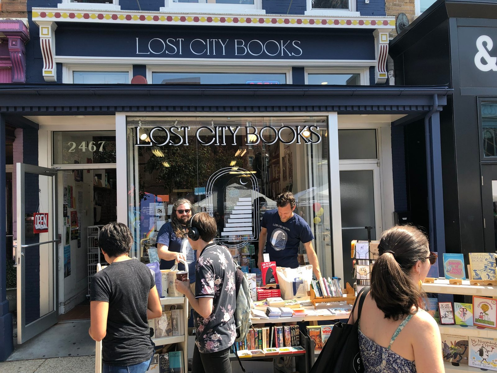
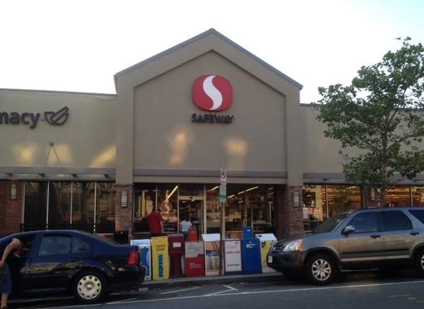
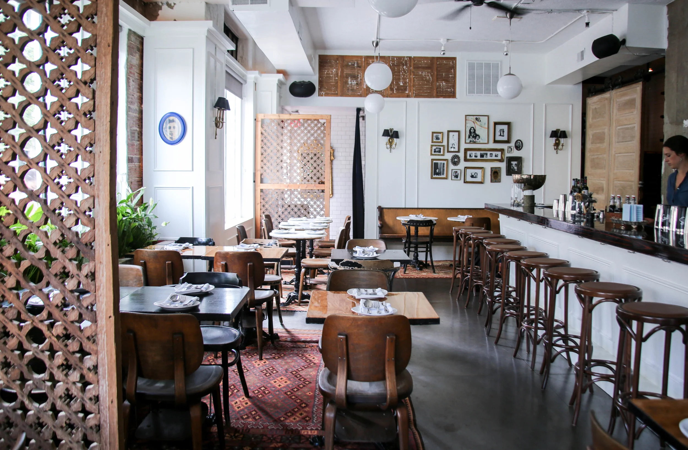
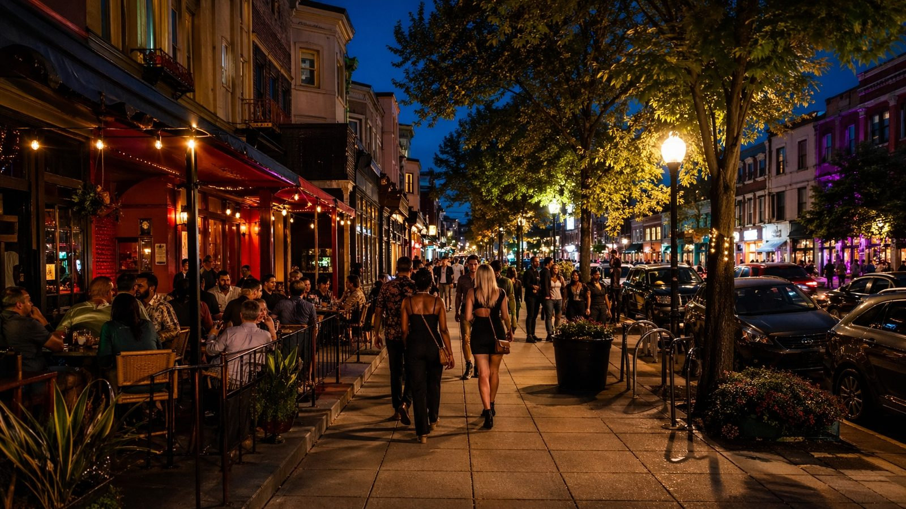
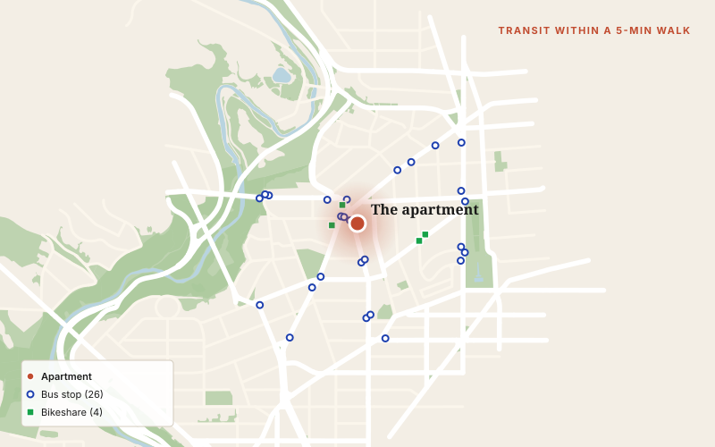
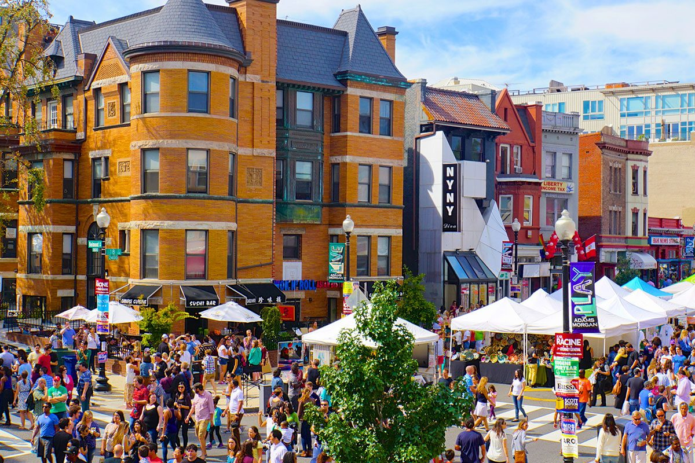
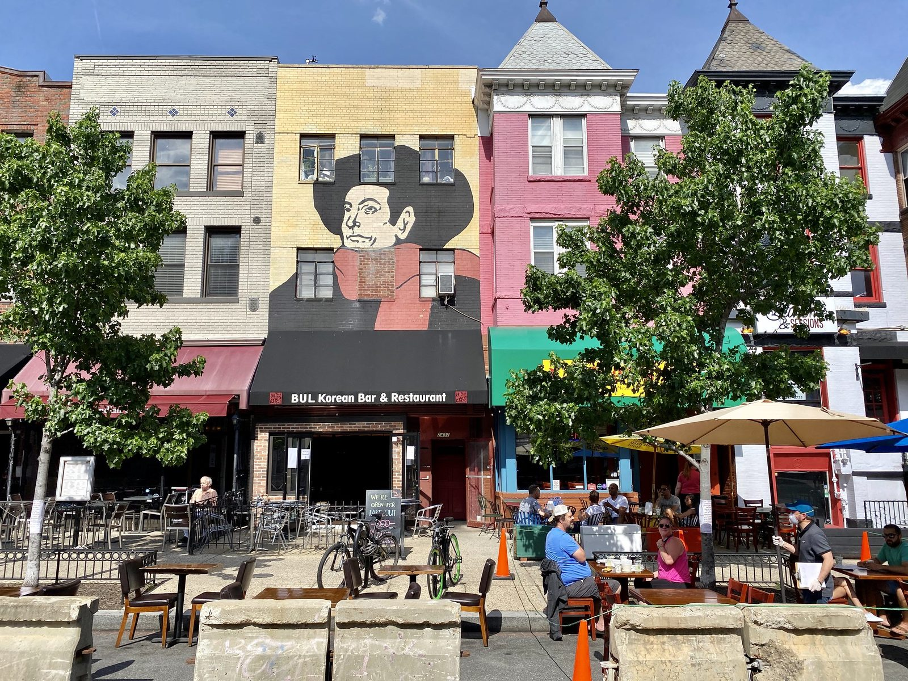
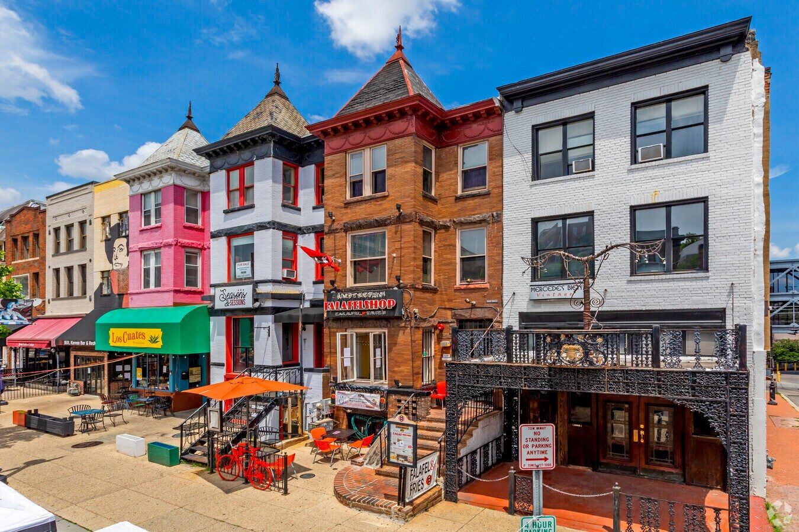

Adams Morgan is one of the few corners of DC that still feels like an actual neighborhood. Most of the city is built around commuting, but here you'll see the same faces in line for coffee, at the dog park, in the basketball court at Marie Reed, at the Saturday farmers market downstairs. It's small (0.47 sq mi · 1.2 km², about 17,000 people), it's dense, and almost everyone walks. Walk Score 99, Bike Score 92, Transit Score 80. Average commute is nine minutes. The median age is 34, most of us are renters, most of us are working professionals, and that's reason number one I'd tell a friend to look here: you'll meet your people fast.
The center of it is the corner of 18th Street and Columbia Road. From the front door you're a block from Ethiopian dinners at Tsehay and Elfegne, the country's largest whiskey collection at Jack Rose, a Michelin-recognized pasta room at Reveler's Hour, and a Saturday farmers market that sets up basically downstairs. The American Planning Association named the neighborhood one of America's "great neighborhoods" in 2014 for the Victorian rowhouses, murals, international diversity, and pedestrian-first streets. Adams Morgan Day, the September street festival, has run since 1978 and draws tens of thousands every year.
For someone who likes to move around, the geography is unbeatable. Rock Creek Park (1,700 acres · 690 hectares of trails) is a five-minute walk west. Marie Reed Recreation Center has an indoor pool, a soccer turf, and basketball courts inside the neighborhood. Walter Pierce Park has the dog crowd in the morning and a full-size soccer field in the evening. There are gyms, yoga studios, Solidcore, run clubs, pickup leagues, and a Capital Bikeshare station basically at the door. Whatever your sport is, you can probably do it without driving.
The thing the demographic profile doesn't capture is the texture. It's a place where the barista at Tryst pulls your double espresso before you've fully said hello, where the hardware-store guy remembers what kind of light bulb you bought last month, and where three months in you'll already know half the names on the block. The architecture is grand, the food is global, the scale is human, and you'll learn the neighborhood not from a guidebook but from the people you keep running into.
Pulled from the US Census, Niche, Walk Score, and Kurby. Short version: this is where the city's young professionals live, mostly in their 30s, mostly working in white-collar jobs, mostly renting, almost all on foot. Easy to find your people here.


Almost everything you need is within a half-mile of the door. The "Social Safeway" at 1747 Columbia Road is the workhorse, high volume, often crowded but everybody ends up there. Harris Teeter on Kalorama is the calmer shop a few blocks away. Yes! Organic Market has been here since 1970, no chain energy. Adams Morgan Ace Hardware is in the converted Ontario Theatre, you'll end up there your first week (something always needs a screw). So's Your Mom is the deli locals tell newcomers about, get the Italian sub. The farmers market downstairs on Saturdays handles produce, bread, and the occasional bumping-into-people you meant to text.


Adams Morgan punches above its weight. Tail Up Goat (one Michelin star, Mediterranean-Caribbean) is the date-night anchor, book it two weeks out. Its sister Reveler's Hour on 18th does the pasta-and-natural-wine thing, with walk-in bar seats if you're flexible. The neighborhood is most famous for Ethiopian: Tsehay and Elfegne are a block apart and both Michelin-recognized — eat with your hands, leave full. Lapis, the Afghan bistro literally next door to the building, is the weeknight workhorse, kebabs and rice that hit. Federalist Pig's smoked brisket sells out by 8pm. For late: Amsterdam Falafelshop stays open well past bar close. The food range here is the thing I miss most when I leave.
This is the part that put Adams Morgan on the map. Jack Rose holds the largest whiskey collection in the country (2,700+ bottles, ask the bartender to surprise you). Roofers Union's rooftop is peak summer. Tiki on 18th makes well-made tropical drinks without the gimmicks. Madam's Organ has live blues seven nights a week (running since 1992) and is two doors down. Bossa is one of the very few DC bars where people actually dance. Code Red is the hidden cocktail bar most DC drinkers don't know about. A liquor-license moratorium from 2000 capped the bar count at around 100, which keeps the strip dense without sprawling. You'll find your spots fast and you'll keep going back to them.

For an urban neighborhood, the access to sport is wild. Rock Creek Park opens up 1,700 acres (690 hectares) of trails a five-minute walk west — roads close to cars on weekends, runners and cyclists take over. Marie Reed Recreation Center has an indoor pool, soccer turf, and basketball courts inside the neighborhood. Walter Pierce Park has a full-size soccer field plus the dog crowd in the morning. Solidcore, several yoga studios, gyms, and run clubs are all within ten minutes. Kalorama Park sits a few blocks south with sunset views over Rock Creek. Meridian Hill's Sunday drum circle (3pm to 5pm) is the neighborhood at its most communal. If your version of unwinding involves moving, you'll be set.
Yes, Adams Morgan doesn't have its own metro stop, and yes, that initially looks like a downside. In practice it isn't. The neighborhood sits between Woodley Park (Red Line, across the Duke Ellington Bridge) and Columbia Heights (Green/Yellow), both about 12 minutes away. But the real answer is the bus: the 42, 43, 90, 92, 96, H1, L2, S2, and S9 all run frequently down Columbia Road, 16th Street, and Florida Avenue. The 42 will get you to Dupont and Downtown faster than the metro on a normal day. Capital Bikeshare is exceptionally dense here, with multiple stations within a block. The average commute in the neighborhood is nine minutes. The map shows every bus stop and Bikeshare station within a 5-minute walk of the front door.
🚲 The apartment comes with a bike if you'd like it. Honestly the fastest way around.

The Mama Ayesha's mural on Calvert Street, a row of every US president painted alongside the restaurant's matriarch, is one of the most photographed walls in DC. The Sunday drum circle at Meridian Hill is the neighborhood at its most communal — bring a blanket, stay until sunset. Adams Morgan Day every September is a multicultural street festival with live music, food, and crafts. The Adams Morgan Heritage Trail is a self-guided walking route with markers explaining the neighborhood's history if you ever want to play tourist for an afternoon.
One of my favorite things about 18th Street is that there are basically no chain stores. Lost City Books (formerly Idle Time) is the kind of independent bookshop you forget exists. Mercedes Bien Vintage is open weekends only and the owner has been doing this since the 80s. Smash Records is a punk vinyl institution since 1984. The neighborhood's murals — "Carry the Rainbow on Your Shoulders," "The Servant Christ," and a dozen others — are among the most documented in the city. DC Arts Center hosts indie performance and exhibition work in a black-box space. Walking 18th Street is genuinely fun. You'll never pass it on autopilot.




183 places I use, mapped and filterable, all within a 15-minute walk. My favorites are starred. Find your future coffee shop, gym, brunch spot, dog walk, and 2am slice in one place.
Open the map →